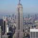

New York City Attractions
Times Square
Times Square, the most bustling square of New York is known for its many Broadway theatres, cinemas and electronic billboards. It is one of those places that make New York a city that never sleeps.
Statue of Liberty
For the many immigrants who flocked from Europe to New York, the Statue of Liberty was the first image they saw of the USA. The statue was a gift from the French government for the 100th anniversary of America's Independence.
Central Park
Central Park is one of those places that make New York such a great place to live. The huge park, 341 hectare large (843 acres), is located in the center of Manhattan. Its design has served as an example for city parks around the world.
Brooklyn Bridge
The Brooklyn Bridge, built between 1869 and 1883, connects Manhattan with New York's most populous borough, Brooklyn. The bridge is one of the most famous and magnificent landmarks in New York City.
Empire State Building
More than any other building in the world, the Empire State Building represents the ambition of humans to build towers that reach for the skies. The skyscraper is probably New York's best known building and can be seen on many postcards.
New York's Fifth Avenue is best known as an unrivaled shopping street. Almost any upscale retailer has a prestigious store located at this street. However not all of Fifth Avenue is shopping-centric. Along Central Park Fifth Avenue becomes a more residential street with a large number of interesting museums.
Wall Street is one of the world's most famous streets. Historically known as the center of New York's financial district, Wall Street is often associated with wealth and ambition in America.
Grand Central Terminal is one of two magnificent train stations that were built in New York in the heyday of railway transportation. The other, Penn Station, was demolished in the 1960s.
At the beginning of the twentieth century, the race for the world's tallest building started in earnest with several developers in New York vying for the coveted title. The Chrysler Building was the first building to top the then tallest structure, the Eiffel Tower in Paris.
Rockefeller Center, originally known as Radio City, is a complex of buildings developed in the midst of the Great Depression. Initially the complex consisted of 14 buildings, the 70 story RCA building being the tallest.
The National September 11 Memorial commemorates the victims of the terrorist attacks on the World Trade Center. The memorial opened on the 10th anniversary of the attacks at the site of the former twin towers of the WTC.
The headquarters of the United Nations in New York were developed by an international team of architects. The main building, the Secretariat, was one of the city's first skyscrapers in International Style.
The Flatiron Building is one of the most famous historic landmarks in New York. The iconic 21 story building, best known for its triangular shape, was one of the early spectacular high-rises that have come to define Manhattan.

With more than two million works of art spanning thousands of years, the Metropolitan Museum of Art is one of the most expansive and prolific art museums in the world and it should be on everyone's New York to-do list.